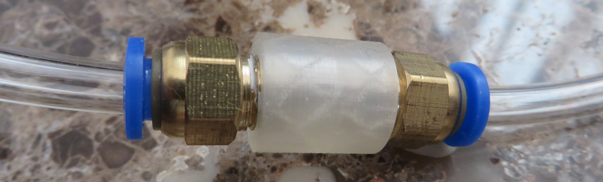

3D printed pneumatic parts
2020-03-29
Off the shelf sizes and shapes of pneumatic joints are limited so I tried to 3D print a simple one to test how well it can hold a vacuum. Joint was printed as a simple cylinder with standard 20% infill using clear PLA. No thread was printed inside cylinder. I hand tightened 1/8" BSP thread pneumatic fittings to it:

Bellow is a video testing if 3D printed pneumatic joint is good enough for a robot to hang on a plaster wall:
Even without proper measuring it is obvious that 3D printed pneumatic joint is usable for this application so it might allow to replace some of metal pneumatic parts with lighter plastic parts in the future.
- Previously:
- Climbing on the door